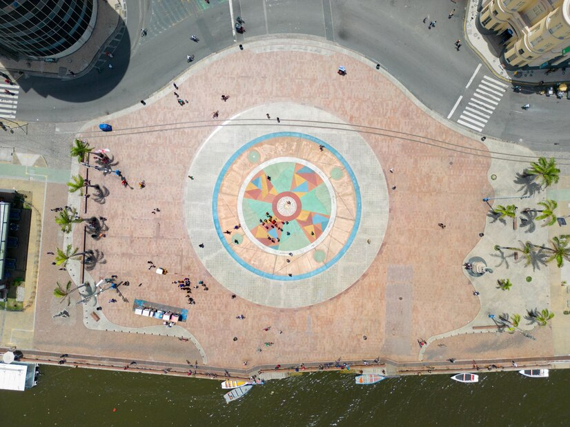
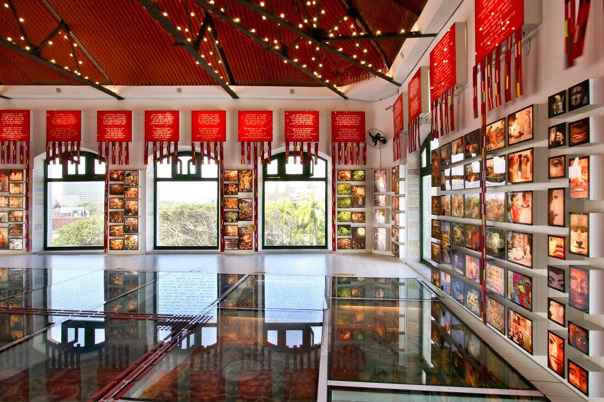
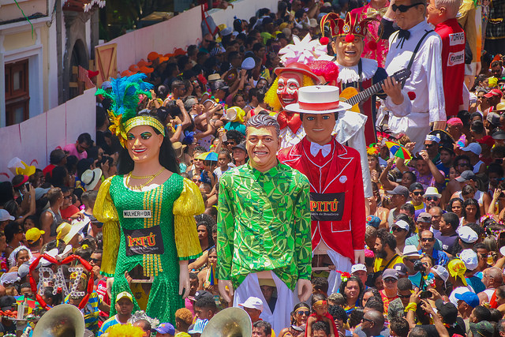

Pontos Turísticos do Recife Antigo
Marco Zero
O Marco Zero é o ponto inicial das medições de distâncias em Pernambuco e um dos cartões-postais mais visitados do Recife. Cercado por construções históricas e pela vista incrível do encontro do rio com o mar, é um espaço vibrante para quem aprecia cultura, arte e natureza.
🔎 Curiosidade: O chão do Marco Zero possui uma enorme rosa dos ventos criada pelo artista plástico Cícero Dias!
🎭 Paço do Frevo
O Paço do Frevo é um centro cultural dedicado a celebrar e preservar o frevo, o ritmo vibrante que é símbolo do carnaval pernambucano. Além de exposições interativas, o espaço oferece oficinas de dança, shows e muita história!
🔎 Curiosidade: Em 2012, o frevo foi declarado Patrimônio Imaterial da Humanidade pela UNESCO!
🎉 Embaixada dos Bonecos Gigantes
A Embaixada dos Bonecos Gigantes é um museu-vivo do Carnaval de Olinda e Recife. Lá você encontra esculturas enormes e super coloridas de personagens famosos do Brasil e do mundo, mantendo viva a tradição dos Bonecos Gigantes.
🔎 Curiosidade: Alguns bonecos chegam a ter mais de 3 metros de altura e são feitos de papel machê!